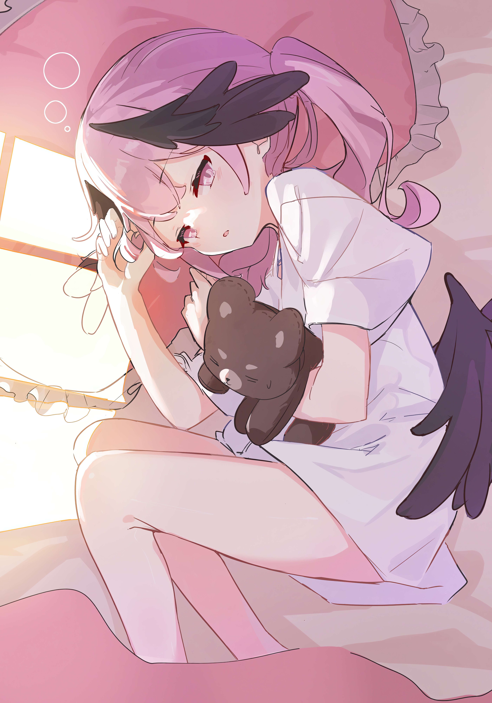

你好，我是Honoka！🌌
欢迎来到我的小屋，一个专属二次元爱好者的温馨角落。我是这里的主人，你可以叫我Honoka！从小浸泡在动画、漫画和轻小说的世界里，二次元对我来说，不仅仅是兴趣，更是一种生活态度和发现美的视角。
我热爱探讨每一季的新番，对经典老番如数家珍；喜欢分享那些触动心弦的漫画故事，以及在虚拟游戏中感受到的每一次心跳。在这里，我会与你分享我的最新观影感受、对某个角色的独到见解、偶尔也会晒晒我的手办收藏，或者是一些关于二次元文化的小思考。
如果你也和我有相同的爱好，喜欢探讨动漫世界的无限可能，或者只是想找个地方放松心情，听听关于二次元的“八卦”，那就加入进来吧！我非常期待与你交流。
期待与你在二次元的星光下相遇！✨